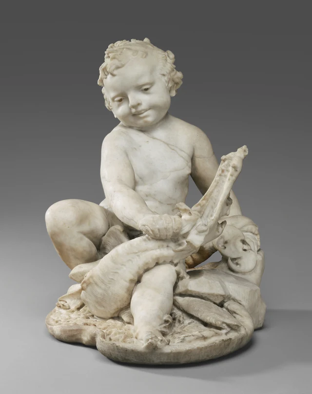

先别急着跟男孩一起笑。看一看他的手正做什么。
画面中央，一只胖乎乎的手握住龙嘴的一部分，手指蜷成一排；另一只手压在龙头上。龙的长吻斜斜向上，张开的嘴就在男孩胸腹前方。再往上，孩子歪着头，嘴角微微扬起。两张嘴离得很近，一张显得轻松，另一张却被撑到极大的开口。
我们很容易先被那张圆脸吸引，再顺着两条手臂发现，笑容并没有告诉我们动作的全部。

这件雕塑把异常强大的力量放进一个尚有婴儿肥的身体里，而且没有让这个身体变得紧张。孩子怎样坐住、龙怎样和他的四肢挤在一起，都参与了这份轻松。被撑开的嘴，还把这个紧凑的组合接到它可能的喷泉用途上。这里的玩耍感并非战斗的消失，而是使力的人不必显出使力的样子。
作品出自十七世纪初的罗马，现由Getty归为贝尔尼尼父子的合作，为后来成为教皇乌尔班八世的马费奥·巴贝里尼的宫邸制作。馆方把男孩联系到幼年赫拉克勒斯制服毒蛇的古代传统。在这个传统里，幼小的身体与惊人的能力原本就可以并存；眼前的雕塑进一步让那种能力显得像孩子随手便能做出的事情。作品说明 知道这个来处，能理解孩子为什么能够胜过怪物；至于这种力量为什么看起来如此轻巧，还得从他的坐姿看起。
一 力量藏在坐姿里
孩子没有挺胸站立，也没有把一条腿向后蹬开，准备扑向对手。他坐得很低。一条腿向画面左侧大幅张开，膝头圆圆地鼓出来；另一条小腿朝前落下，把脚送到基座前沿。两腿之间不是空的，龙那条弯曲的身体横在这里，把孩子的腹部、手和脚连成一个拥挤的小范围。
先只沿孩子身体的外缘看：头向一边偏，肩膀高低有别，伸向前方的胳膊弯曲，膝盖向侧面撑开。这不是端正安坐的轮廓。但是，最容易让身体失去平衡的伸展并没有出现。手没有离开身体很远，龙嘴被带到腹部前方；孩子不用追逐它，只要把它留在自己面前。上身的动作因此能够保持短而近。
低处的体积又把这份接近托住。张开的腿、横着的龙身和前方的小腿都留在基座范围内，形成一个宽厚的底部。越往上，形体越少，最后剩下偏斜的头。孩子的脸可以显得活泼，下面却是一团相当密实的接触关系。他看起来不费力，部分原因正在于作品没有让他成为悬在空中的一双手。
这也是坐姿与故事相接的地方。龙既是他制伏的对象，又被他坐在身下。在叙事上，两个身体有对立；在造型上，它们却不能像两个独立站立的人那样轻易分开。男孩的身体顺着龙的体积安排，龙又穿进男孩的腿间。怪物没有被举到身体以外，变成一个可单独展示的战利品；它还在孩子的近处，被坐着、握着、按着。
全像高约五十六厘米，宽约五十二厘米。这个接近等高等宽的尺度提醒我们，它的气势并不靠高耸：向两边展开的腿和下方的龙身，几乎和头顶的高度同样重要。屏幕上如果只放大那张脸，便会失去这个宽宽的底部，也失去“轻松”所倚靠的体积。
二 肉的圆，爪的弯
看过整个坐姿，再把注意力移到孩子的手腕。握持处的手指不是细长而分明的骨节，而是一节节挤在一起的小圆体；前臂到了腕部收窄，腕部下面又迅速鼓成手掌。腿也如此：膝头、小腿、脚踝并没有排成几根平直的棒，而是连续地膨起、收拢。我们从这些变化认出幼童身体的柔软。
龙身提供了另一种读法。它的腹部有连续的横向起伏，长吻的边缘有尖突，头侧有翻卷的形状。孩子的皮肤让视线沿着宽大的曲面滑过去，龙的表面却一再把视线截住，让我们辨认一小段凹凸、一个卷曲的边缘。两者都用大理石雕成，眼睛却不会把它们读成同一种身体。
差别不只在“光滑”和“粗糙”。龙的长吻也是一段伸长的体积，但它越向上越显得窄长，边缘尖锐；孩子伸出的前臂则在接近手腕时仍保持着圆厚。两条靠近的形体，一条容易让人想到坚硬的嘴，一条让人想到可以被捏出凹陷的肉。石头并没有真的变软，软的感觉来自形体在相邻部位之间如何变化。
此时再看最下方，会发现孩子并没有把怪物完全隔在自己身体之外。龙的一只爪伸到前方脚踝旁，弯曲的趾端紧贴那条圆圆的小腿；另一边，龙身挡住了一部分腿的去向。上面的手控制嘴，下面的腿却与爪、躯体纠缠在一起。孩子看似随意摆放的四肢，实际上没有多少独占的空间。
这个小细节让场景不至于变成“可爱的孩子加上一件奇形玩具”。龙有自己的爪和嘴，有能够抓住眼睛的尖端；它的形体仍向孩子靠近。与此同时，照片中没有一张因疼痛紧绷的男孩面孔来回应这些尖端。我们看见接触，却看不见相应的紧张，超常的能力便在这种不相称中出现。
两个身体以相近的大理石色泽呈现，使这种接触没有鲜明的颜色界线。眼睛必须沿着凹陷和遮挡，才能分清哪里是腿，哪里是龙。观看于是带着一点解开缠绕的工作：不是先认出两件东西，再看到它们放在一起，而是在它们挤在一起的地方逐步辨出两个身体。
三 两张嘴的距离
孩子的笑并不夸张。嘴唇之间只留下一道细缝，一侧嘴角扬起，鼓起的脸颊接向短短的下巴。歪头使两眼和嘴都偏离水平，仿佛整张脸带着一点好奇的倾斜。照片中，他的脸朝向前方，目光也没有沿着两条手臂直直落到龙嘴上。
龙嘴却占据了另一种幅度。长吻几乎竖到孩子胸口高度，张口形成的斜线伸进上身前的空间。它不像孩子那道细小的唇缝，只需面部一个局部就能显出表情；整个头部都被卷进开口的动作。我们可以在很小的范围里从细微的笑看到巨大的张开，而两只手正好把它们连接起来。
这些手让张口不只是龙的表情。画面右侧的手指铺在龙头上，另一只手在中央紧紧握住嘴的另一部分；一处按住，一处牵持。馆方把动作解释为徒手扳断龙的颚部。馆藏说明 即使不把照片读成某个骨头正在断裂的精确瞬间，也能看出：龙的嘴无法由它自己决定怎样合拢。
于是，笑容与动作不再只是“天真”和“力量”两个词的搭配。孩子的脸朝着外面，双手却持续占有龙头。脸让我们愿意停留，手让我们知道停留时究竟在看什么。两者都没有被藏起来，只是圆脸更容易先得到注意。
如果我们觉得这是一场顽皮的游戏，那种感觉有具体的条件：孩子的头歪着，身体没有绷直，嘴角很轻；而且他似乎不必专心盯住对手。如果我们随后觉得龙的处境不太轻松，也有同样具体的依据：嘴被双手分开，身体仍留在孩子身下。这不是要给一个神话幼童作人格判断，而是辨认作品怎样在一组亲近的身体里，放进并不对等的动作。
也正因为动作没有脱离坐姿，笑才不会仅仅成为胜利结束后的表情。男孩尚未放手，龙嘴尚未合上。轻松持续在动作当中。这份持续，让照片中的安静带着一点奇异：整个场面似乎可以一直这样维持下去，而孩子不必换一口气。
四 龙嘴还可能做什么
这张被撑开的嘴，很可能不只是让人看的。
Getty于1988年发表的入藏说明记载，一条孔道从基座底部通向龙嘴，并据此认为作品可能原拟用作室内喷泉。这里有一个重要区别：孔道是馆方报告的实物结构，室内喷泉则是由它支持的用途判断。照片本身并没有展示孔道全程，也不能告诉我们原来的水盆、安装高度或水流形状。Getty入藏研究，第184页
不过，只要保留“如果通水”这个条件，刚才的动作就能多出一层意义。孩子把龙嘴撑开，水从龙嘴流出；一个强迫张开的嘴，同时成为让真实流动进入雕塑的出口。出水口并非随便藏在某处，它落在我们已经关注的动作中心：两只手之间，长吻与孩子上身相邻的地方。
这样设想，并不需要替作品补一条夸张的水柱。仅仅想到水会从那里出来，观看的时间就已经改变。大理石里的手不能继续拉，龙不能继续挣动，而水会不断经过那个不变的位置。雕塑所刻住的动作，可以让另一种真正发生的运动穿过去。于是，永久张口不只意味着一个瞬间被延长，也可能成为装置持续工作的条件。
基座上起伏不平的表面与低处聚集的身体，使这一可能用途不显得全然外加；但它们不能单凭形状替我们复原一整座喷泉。今天这张没有流水的馆方照片，留下的是一个独立、紧凑的石雕组合。喷泉的知识没有取消它作为雕塑的完整性，而是提醒我们：同一个开口，可能同时属于故事与使用。
这也使“玩耍”多出一个层次。孩子在形象里摆弄龙，观看者在现实中可能又观看从龙嘴出来的水。孩子不必真正改变手势，作品也能继续产生新的可看之物。它的轻快不仅来自微笑，还来自石雕如何为可能的流水安排了位置。
最后再看那只握紧的手。它把龙嘴留在开放的位置，也把我们的注意力留在那里。上面是柔软的小脸，下面是紧贴的身体，中间则是一个能把表情、力量和用途接在一起的开口。这件作品的奇妙，不在于让强大和幼小彼此抵消，而在于让我们逐渐发现：一个孩子显得毫不费力，原来需要这么多形体与他一起工作。
可选阅读 用SAE再看一次
试着暂时遮住照片最上方的头，只保留肩膀以下。弯曲的手臂、握住龙嘴的手、宽宽分开的腿都还在。我们仍然能够辨认谁控制着谁，却少了一项判断这场相遇“像玩耍”的重要依据。
再把脸露出来。改变的不是手的位置，也不是龙嘴张开的程度，而是同一个动作显出的调子。微笑和歪头把一种轻松放到使力的身体上。这种比较不需要改造雕像；在观看时移开与恢复一部分注意力，就能发现，对动作的辨认与对整个场景的感受并不是同一件事。
这里还要分清，补回脸并没有给我们的判断增加一项无关的装饰。脸属于正在使力的这个身体；它的轻松使下面的手不再像费劲地完成一项任务，而像熟练到可以分出注意力的动作。局部的姿势没有变，局部在整个身体里显出的意味却变了。若只把脸称为“可爱”，再把手称为“有力”，两项评价相加，仍不足以说明这种变化。
这可以成为进入SAE美学的一处入口：一个可见的局部怎样重组我们对整体的判断。先辨认遮住与补回脸时真正改变了什么，再追问这张轻松的脸与正在施力的手为什么能够构成如此鲜明的关系。理论在这里提供的是继续追问的方向，不能替我们省去观看那两只手的工作。SAE美学总论
图像与资料说明
本文依据Getty所供的一张正面偏俯视照片细读，原图3561 × 4500像素，馆方标注为保护处理后的照片。文件保留官方下载原样；正文没有用其他角度补充不可见的部分，也不把照片当作现场或触摸记录。底部到龙嘴的孔道据馆方研究，不是从这张照片独立确认的。
作者和年代采用现行馆藏记录：彼得罗与吉安·洛伦佐·贝尔尼尼，约1617年。早期出版物中的单一作者归属与不同年代，不作为本文署名依据；本文也不把某一只手、某一张脸的雕刻分配给父子中的某一人。图像来源与许可见图像登记，参考资料见资料目录。形体分析与喷泉效果的条件性推想为本文解读。